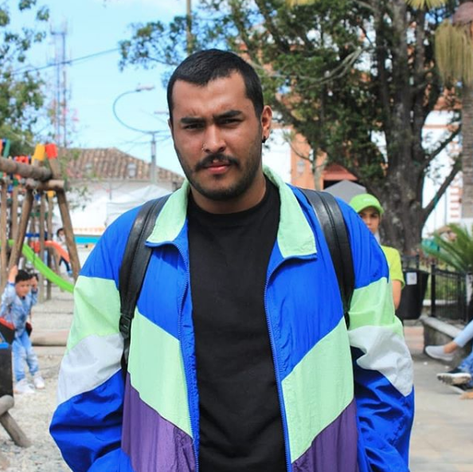

Jhon Sebastián Martínez Soto
21 años
¿Quién soy?
Soy Sebastián Martínez, pero puedes llamarme Sebas, soy estudiante de Desarrollo de Software y actualmente estoy en quinto semestre, soy un apasionado por el desarrollo web, me encanta aprender y cada día estoy en disposición de hacerlo, me encanta asumir riezgos y problemas a los cuales les puedo dar solución.
Mis conocimientos
Actualmente tengo conocimientos solidos en HTML, CSS y Javascript, SQLServer y bases de datos relacionales y POO, también tengo conocimientos básicos en C# y Java, actualmente me encuentro en proceso de aprendizaje de React.js y Node.js